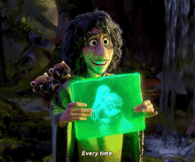

ERA DO STREAMING (2020-Atualmente)
|
Nos últimos dois anos, muita coisa mudou na indústria do entretenimento e dentro da empresa. Em 2020, saiu Bob Iger como CEO e entra Bob Chapek, que comandou o período em que tivemos o início da pandemia de Covid-19 e a estreia do serviço de streaming Disney+. Esses fatores foram decisivos para mudar o comportamento do público que, das telonas do cinema, passou a assistir às estreias no streaming, e tem sido um desafio para a gigante entender quais melhores lançamentos devem sair para o cinema ou para a plataforma.
 O que podemos concluir é que esta era está sendo menos marcada no estilo e temática e mais sob um olhar analítico: como as produções estão rendendo nas redes sociais, o que as pessoas estão falando, como essas métricas se comportam para entender como a Disney irá reagir e qual direção irá seguir. Um exemplo claro foi na música “We Don’t Talk About Bruno”, de Encanto, se tornou a canção da Disney a ficar melhor colocada no ranking da Billboard em 26 anos - superando a impactante "Let it Go" de Frozen. O hit surpreendeu a própria Disney e parte desse sucesso foi a rápida propagação no TikTok com trends e dancinhas. |